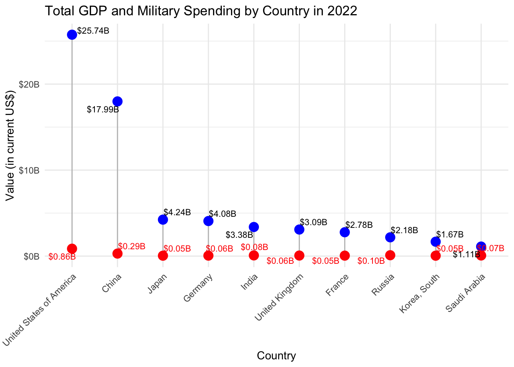

library(readxl)
library(dplyr)
library(ggplot2)
library(scales)
library(readxl)
library(tidyr)
library(ggrepel)CSC3107 - Information Visualisation Project
Data Preparation by P1 Orchid
Load Libraries
Load Dataset
regional_totals <- read_excel(
"SIPRI-Milex-data-1949-2023.xlsx",
sheet = "Regional totals",
skip = 13)
local_currency_financial_years <- read_excel(
"SIPRI-Milex-data-1949-2023.xlsx",
sheet = "Local currency financial years",
skip = 7)
local_currency_calendar_years <- read_excel(
"SIPRI-Milex-data-1949-2023.xlsx",
sheet = "Local currency calendar years",
skip = 7)
const_currency <- read_excel(
"SIPRI-Milex-data-1949-2023.xlsx",
sheet = "Constant (2022) US$",
skip = 5)
current_us <- read_excel(
"SIPRI-Milex-data-1949-2023.xlsx",
sheet = "Current US$",
skip = 5)
share_of_GDP <- read_excel(
"SIPRI-Milex-data-1949-2023.xlsx",
sheet = "Share of GDP",
skip = 5)
per_capita <- read_excel(
"SIPRI-Milex-data-1949-2023.xlsx",
sheet = "Per capita",
skip = 6)
share_of_govt_spending <- read_excel(
"SIPRI-Milex-data-1949-2023.xlsx",
sheet = "Share of Govt. spending",
skip = 7)Data Cleaning for Current US Dataset
# Identify the year columns (1949.0 to 2023.0)
year_columns <- as.character(1949:2023)
year_columns <- paste0(year_columns, ".0")
# Convert year columns to numeric, handling non-numeric values by coercing them to NA
current_us[year_columns] <- lapply(current_us[year_columns], function(x) as.numeric(as.character(gsub("[^0-9.-]", "", x))))
# Convert double columns to integer
current_us[year_columns] <- lapply(current_us[year_columns], function(x) as.integer(x))
# Remove ".0" suffix from column names
names(current_us) <- sub("\\.0$", "", names(current_us))Compute Top Ten Spending Countries
# Select the relevant columns (Country and 2023.0)
# Sort the data frame by the 2023.0 column in descending order
# Select the top 10 rows
top_10_countries <- current_us |>
select(Country, `2022`) |>
arrange(desc(`2022`)) |>
head(10)
top_10_countries# A tibble: 10 × 2
Country `2022`
<chr> <int>
1 United States of America 860692
2 China 291958
3 Russia 102366
4 India 79976
5 Saudi Arabia 70920
6 United Kingdom 64081
7 Germany 56153
8 France 53638
9 Japan 46880
10 Korea, South 46365Plot Lollipop Chart (Total GDP vs Military Spending)
# Dot plot (Lollipop Chart)
ggplot(new_table, aes(x = reorder(Country, -Total_GDP))) +
geom_segment(aes(x = Country, xend = Country, y = 0, yend = Total_GDP), color = "grey") +
geom_point(aes(y = Total_GDP), color = "blue", size = 4) +
geom_point(aes(y = Current_US), color = "red", size = 4) +
geom_text_repel(aes(y = Total_GDP, label = dollar(Total_GDP / 1e6, suffix = "m")), size = 3, nudge_y = 0.1) +
geom_text_repel(aes(y = Current_US, label = dollar(Current_US / 1e6, suffix = "m")), size = 3, nudge_y = -0.1, color = "red") +
scale_y_continuous(labels = dollar_format(prefix = "$", suffix = "m", scale = 1e-6)) +
labs(title = "Total GDP and Military Spending by Country in 2022",
x = "Country", y = "Value (in current US$)") +
theme_minimal() +
theme(axis.text.x = element_text(angle = 45, hjust = 1))